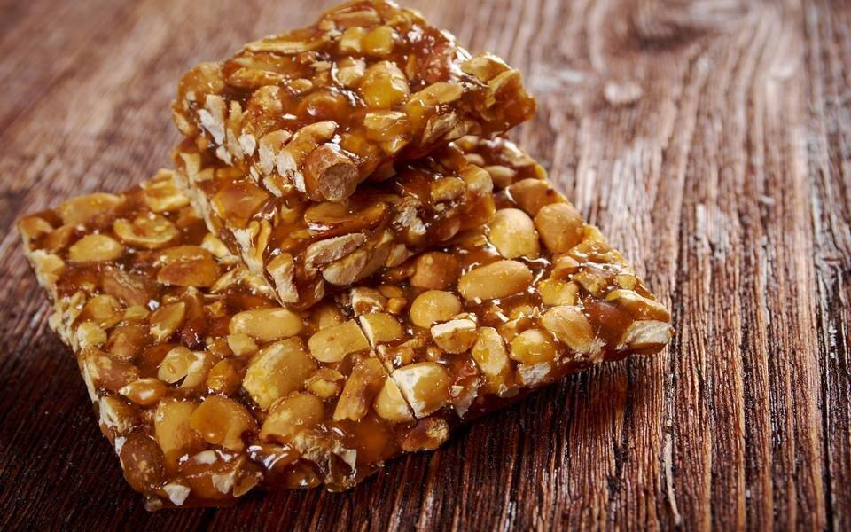

Gozinaki

Description
Gozinaki is a Georgian sweet traditionally prepared for the new year.
It's made of caramelized nuts, usually walnuts, fried in honey.
It's basically a honey and nut brittle.
Ingredients
- 4 cup of walnuts
- 1 tbsp vegetable oil
- 1 cup honey
- 2 tbsp sugar
Steps
- Heat the oven to 350 °F
- Roughly chop the nuts and place them on a bake sheet.
If there is any residual powder left from the nuts,
don't place them on the bake sheet as they will burn
- Grill in the oven for 5 to 7 minutes, until the nuts
become fragrant. Remove from the oven
- Rub oil on another bake sheet and set aside
- Pour the honey and sugar into a large pan on medium heat.
Cook, stirring occasionally, until the boiling honey
darkens (about 5 minutes)
- Incorporate the grilled nuts using a wooden spatula.
Mix without stopping to coat the nuts and to continue
the caramelization for another 4 to 5 minutes
- Once the caramel is dark, pour it on to the already
oiled bake sheet. With the help of a spatula,
create an even, one-inch-thick, rectangular wafer.
Be careful: do not touch the caramel with your
fingers as it is perilously hot
- Let rest for ten minutes then, with a large knife,
cut it into squares or diamonds